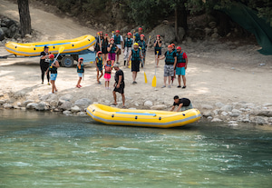

History
Founded in 2005 by a small crew of river guides, Cascade Rapids Rafting Co. started
with a single raft and a love for the untamed water of the Cascade River Canyon.
Over the years, word of our guided trips spread from local campgrounds to travelers
around the world.

Today, our team of certified guides has led thousands of rafters safely through some
of the most exciting rapids in the region, all while staying true to the same
passion for adventure and respect for nature that started it all.